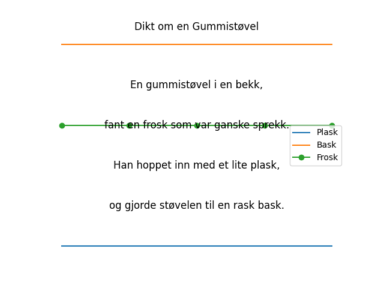

En gummistøvel i en bekk, fant en frosk som var ganske sprekk. Han hoppet inn med et lite plask, og gjorde støvelen til en rask bask.

import matplotlib.pyplot as plt
import numpy as np
# Dikt
dikt = """
En gummistøvel i en bekk,
fant en frosk som var ganske sprekk.
Han hoppet inn med et lite plask,
og gjorde støvelen til en rask bask.
"""
# Definer data basert på diktet
# Antall linjer i diktet
n_lines = len(dikt.splitlines())
# Plask-plott
x_plask = np.linspace(0, 1, n_lines)
y_plask = np.zeros(n_lines)
plt.plot(x_plask, y_plask, label='Plask')
# Bask-plott
x_bask = np.linspace(0, 1, n_lines)
y_bask = np.ones(n_lines) * 0.5
plt.plot(x_bask, y_bask, label='Bask')
# Frosk-plott
x_frosk = np.linspace(0, 1, n_lines)
y_frosk = np.zeros(n_lines) + 0.3
plt.plot(x_frosk, y_frosk, label='Frosk', marker='o')
# Tittel og akseetiketter
plt.title('Dikt om en Gummistøvel')
plt.xlabel('Tid')
plt.ylabel('Effekt')
# Legg til tekst fra diktet
for i, line in enumerate(dikt.splitlines()):
plt.text(0.5, 0.5 - i * 0.1, line, ha='center', va='center', fontsize=12)
# Legg til legende
plt.legend()
# Juster plottet
plt.axis('off')
# Lagre figuren
plt.savefig(output_path)execution_ok=True fallback_used=False image_ok=True